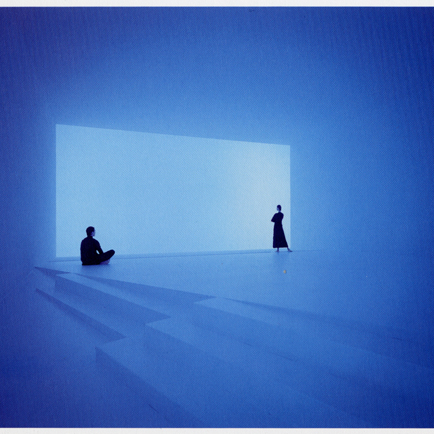
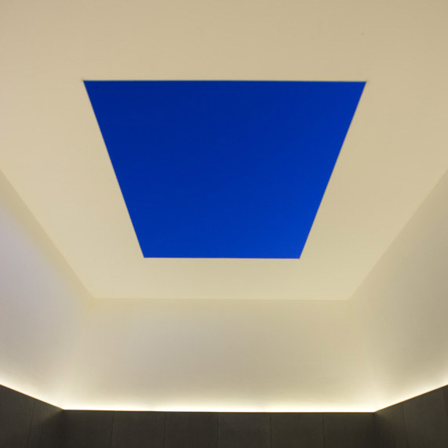
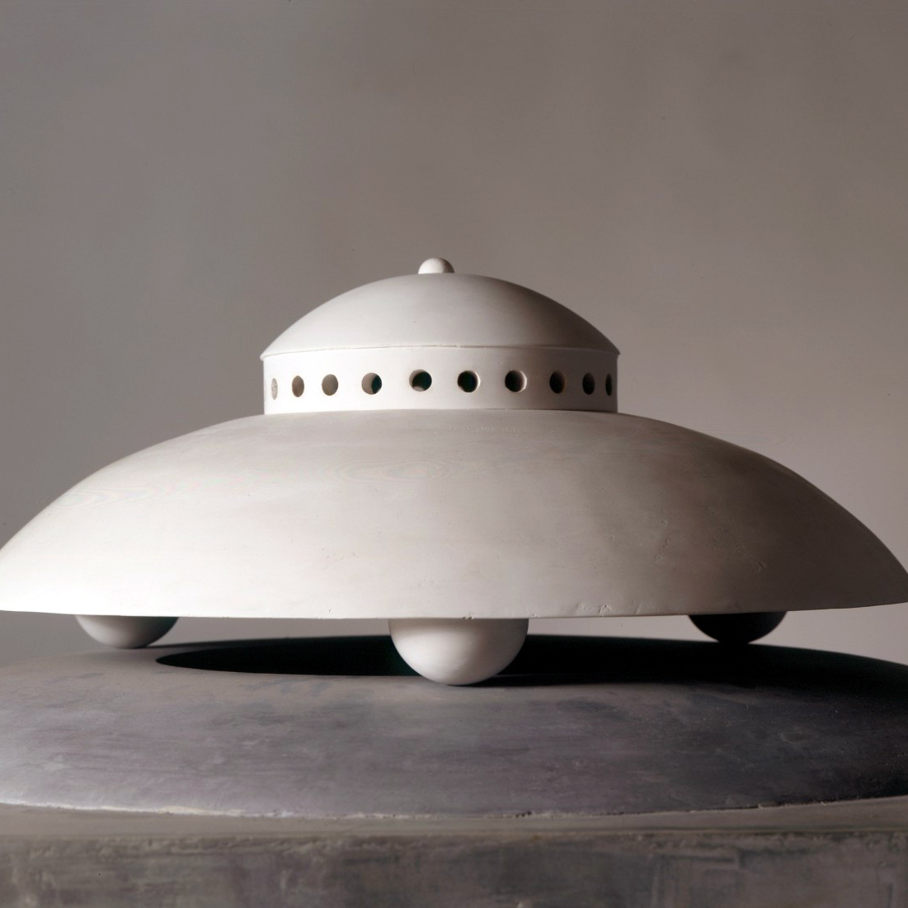

Cuentos de Luz
Turrell, an avid pilot who has logged over twelve thousand hours flying, considers the sky as his studio, material and canvas. New Yorker critic Calvin Tompkins writes, “His work is not about light, or a record of light; it is light — the physical presence of light made manifest in sensory form.”

Memorias Volando Volando
Born May 6, 1943, Los Angeles, California
Graduated Pasadena High School, 1961
BA Psychology, Pomona College, 1965
Art Graduate Studies, University of California, Irvine, 1965-1966
MA Art, Claremont Graduate School, 1973

Explorando
Roden Crater belongs to a tradition of monumental structures that have been built by artists, rulers and priests, ancient and modern. Above-ground observatories for specific celestial events include Maeshowe in Scotland (which predates the pyramids), Newgrange in Ireland, and Abu Simbel in Egypt.